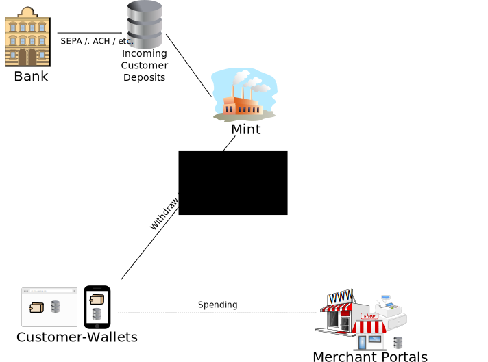

Taler is the electronic equivalent of cash, except harder to fake. If your digital wallet is lost -- say because your computer is irreparably damaged or compromised -- only the amount of coin stored in your wallet will be lost. Unlike a physical wallet, you can make backups of your digital wallet which can provide security against data loss. So your digital wallet works mostly just like a physical wallet, except online and without the need to manually count coins.
Taler ist das elektronische Äquivalent zu fälschungssicherem Bargeld. Beim Verlust der digitalen Geldbörse, sei es durch Schäden am Rechner oder durch einen gezielten Angriff, geht nur genau der Betrag verloren, der sich in der Geldbörse befand. Allerdings ist die digitale Ausgabe einer Geldbörse ungleich einfacher gegen Verlust zu sichern, indem regelmäßig ein Backup angefertigt wird. Zusammengefasst bedeutet das, dass die digitale Geldbörse nahezu wie ihr aus dem Alltag bekannter Bruder funktioniert, außer dass sie sich online befindet und dass das lästige Münzenzählen bis auf Weiteres entfällt.
Taler est l’équivalent électronique de la monnaie, sauf qu’il est plus difficile de le falsifier. Si vous perdez votre portefeuille électronique -- parce que votre ordinateur est totalement HS ou en panne -- seul le montant de la monnaie stockée dans votre portefeuille sera perdu. Contrairement à un portefeuille classique, vous pouvez faire des mises à jour de votre portefeuille numérique qui sécurise contre la perte de données. Donc votre portefeuille numérique fonctionne comme un portefeuille classique, mais en ligne et sans avoir à compter manuellement votre monnaie.
Taler è l'equivalente elettronico dei contanti, tranne per il fatto che è più difficile da falsificare. Se il tuo portafoglio digitale va perso (ad esempio, perché il tuo computer è stato danneggiato irreparabilmente o compromesso), solo l'ammontare di denaro contenuto in esso andrà perduto a sua volta. A differenza di un portafoglio reale, è possibile fare un backup di quello digitale, così da garantire sicurezza contro la perdita dei dati. Quindi il tuo portafoglio digitale funziona per lo più come quello reale, eccetto il fatto che sia online ed eviti di contare manualmente le monete.
Your transactions are private, neither the mint (bank) nor merchant needs to learn your identity. There is no need to give our credit card numbers or other sensitive information, and the merchant will only be able to do exactly the transaction you confirmed using your digital wallet.
Von Ihnen durchgeführte Transaktionen sind generell privat, weder die Münzanstalt noch der Händler kennt Ihre Identität. Weder Kreditkartennummern, noch andere sensitive Informationen müssen herausgegeben werden, und der Händler ist in der Lage, einzig von Ihnen bestätigte Transaktionen durchzuführen.
Vos transactions sont privées, ni la banque, ni les commerçants n'ont besoin de connaitre votre identité. Vous n'avez pas besoin de communiquer votre numéro de carte de crédit ou tout autre information sensible, et le commerçant ne pourra qu'effectuer la transaction que vous aurez confirmée en utilisant votre portefeuille numérique.
Le tue transazioni sono private, né la mint (banca), né il venditore hanno bisogno di conoscere la tua identità. Non c'è necessità di rivelare il numero di carta di credito o altre informazioni riservate, e il venditore sarà solo in grado di fare l'esatta transazione che tu hai confermato usando il tuo portafoglio digitale.
You will be able to withdraw digital coins to replenish your wallet using your credit card or SEPA transactions, similar to how you pay or withdraw cash today.
Um Geld in Ihre digitale Geldbörse zu transferieren verwenden Sie wie gewohnt entweder Ihre Kreditkarte oder alternativ eine SEPA-Überweisung.
Vous pourrez retirer de la monnaie numérique pour recharger votre portefeuille en utilisant votre carte de crédit ou des transactions SEPA, de la même manière que vous payez ou retirer du liquide aujourd'hui.
Potrai prelevare le tue monete digitali per riempire il portafoglio usando la carta di credito o transazioni SEPA, simili al modo in cui paghi o prelevi contanti normalmente al giorno d'oggi.
Coins in your digital wallet will be of the same denomination as the cash in your physical wallet. So you will not have to worry about currency fluctuations or conversion rates. Like a physical wallet, you can carry digital coins of different currencies in your digital wallet at the same time.
Münzen in Ihrer digitalen Geldbörse besitzen die gleichen Nennwerte wie das Geld in Ihrer echten Geldbörse. Auf diese Weise müssen Sie sich nicht um Währungsschwankungen oder Wechselkurse sorgen. Wie auch im echten Leben können Sie digitale Münzen verschiedener Währungen in Ihrer digitalen Geldbörse mit sich führen.
La dénomination de votre monnaie dans votre portefeuille numérique sera la même que celle de votre portefeuille classique. Vous n'aurez donc pas à vous inquiéter des fluctuations des cours des monnaies ou des taux de conversion. Comme un portefeuille classique, vous pouvez avoir en même temps des monnaies de différentes devises dans votre portefeuille numérique.
Il denaro nel tuo portafoglio digitale sarà sotto la stessa denominazione di quello nel portafoglio reale, così da non doverti preoccupare per la svalutazione della valuta o per le tariffe di conversione. Come in un portafoglio normale, puoi avere allo stesso tempo monete digitali di diverse valute nel tuo portafoglio digitale.
Customers interact with the Taler system mostly using a free wallet implementation, which may be an extension or plugin to their browser or a custom application on their computer(s). Typical steps performed by customers are:
I cliente interagiscono con Taler principalmente utilizzando un portafoglio elettronico gratuito, che può presentarsi sia come una estensione per il loro browser, sia come una applicazione dedicata. Le tipiche operazioni fatte da un cliente sono:
